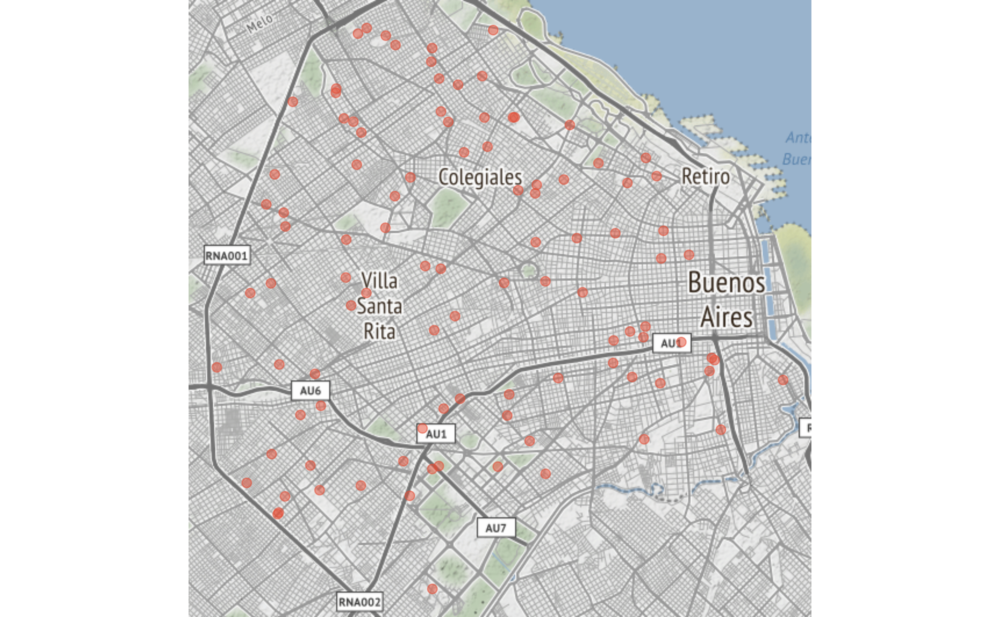
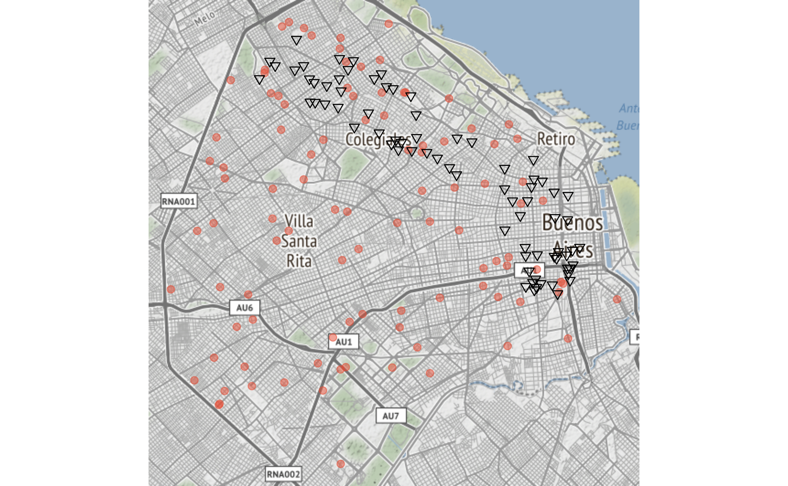
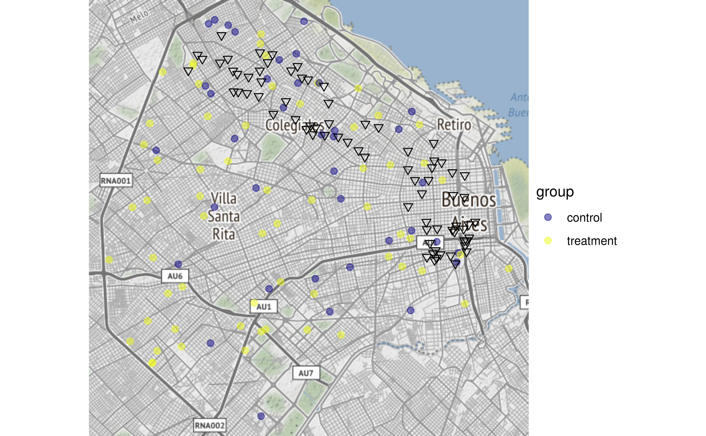
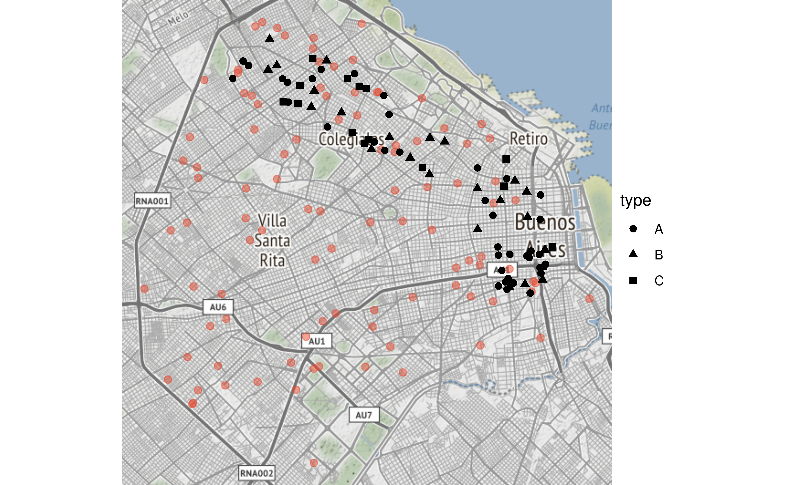
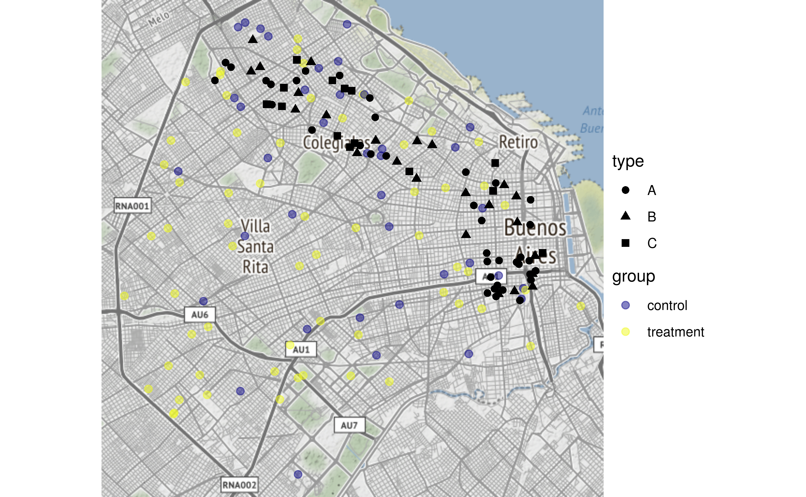

using_GPE.RmdYou’ll need tabular data with addresses, or “lon” and “lat” columns containing WG84 (Mercator) location coordinates. IE, a table with the addresses of schools were program beneficiaries attend, or a street or centroid identifying their neighboorhoods, or their home addresses -if using personal data is allowed.
You can can geocode your data (obtain latitude and longitude from addresses) via GPE_geocode(), a function that queries the Google Maps Platform to translate addresses into latitude/longitude coordinates.
Using the Google Maps Platform requires a registered API key. To obtain it, follow instructions from https://developers.google.com/maps/gmp-get-started. Make sure you enable the Geocoding API.
A valid API key is a string of leters and numbers that looks like AIjaSyBR76W62lloYPh_c01LYGhCOZuKU6RVW9 -this is not a real ID by the way, just an example-. Once you have your key, you can take a data frame with an address column like this one:
## # A tibble: 10 x 3
## name address level
## <chr> <chr> <chr>
## 1 EMus 02 Camarones 4351, C1407FMU, CABA other
## 2 Col La Anuncia… Arenales 2065, C1124AAE, CABA preschool, primary,…
## 3 EPjs 06 Avda. Eva Perón 7431, C1439BTM, CA… primary
## 4 EPjs 02 Avda. Pte. Manuel Quintana 31/07, … primary
## 5 Col Horacio Wa… Díaz Colodrero 2431, C1431FMA, CABA preschool, primary,…
## 6 EPjc 21 Pinto 3910, C1429APP, CABA primary
## 7 Casa de la Edu… Boulogne Sur Mer 626, C1213AAJ, CA… primary, secondary
## 8 CFP 06 CIFPA Avda. Asamblea 153, C1424COB, CABA secondary
## 9 EI Pulgarcito Cerrito 572, C1010AAL, CABA other
## 10 Esc de la Paz Gral. Venancio Flores 65, C1405CGA… preschool, primary,……then add latitude and longited columns with GPE_geocode, specifying the name of the address column and your Google Maps Platform API key:
key <- "AIjaSyBR76W62lloYPh_c01LYGhCOZuKU6RVW9" # This is not a real API key, provide yours
GPE_geocode(schools, address, key)## # A tibble: 10 x 5
## name address level lon lat
## <chr> <chr> <chr> <dbl> <dbl>
## 1 EMus 02 Camarones 4351, C1407FMU, C… other -58.5 -34.6
## 2 Col La Anunc… Arenales 2065, C1124AAE, CA… preschool, prima… -58.4 -34.6
## 3 EPjs 06 Avda. Eva Perón 7431, C1439… primary -58.5 -34.7
## 4 EPjs 02 Avda. Pte. Manuel Quintana … primary -58.4 -34.6
## 5 Col Horacio … Díaz Colodrero 2431, C1431F… preschool, prima… -58.5 -34.6
## 6 EPjc 21 Pinto 3910, C1429APP, CABA primary -58.5 -34.5
## 7 Casa de la E… Boulogne Sur Mer 626, C1213… primary, seconda… -58.4 -34.6
## 8 CFP 06 CIFPA Avda. Asamblea 153, C1424CO… secondary -58.4 -34.6
## 9 EI Pulgarcito Cerrito 572, C1010AAL, CABA other -58.4 -34.6
## 10 Esc de la Paz Gral. Venancio Flores 65, C… preschool, prima… -58.4 -34.6Columns with latitude and longitude coordinates are added to the original data frame.
You’ll need a data frame containg participant data.
GPE includes “participants”, an example data frame with fictional public program beneficiaries:
## participant_id group income_bracket
## 1 6494 treatment 6
## 2 409 control 6
## 3 6763 treatment 4
## 4 616 control 10
## 5 4650 control 7
## 6 594 control 8
## address lon lat
## 1 LAVALLE Y PARANA, CABA -58.38835 -34.60277
## 2 HORTIGUERA Y SANTANDER, CABA -58.44152 -34.63677
## 3 BAZURCO Y CUENCA, CABA -58.51083 -34.58317
## 4 FIGUEROA ALCORTA, PRES. AV. Y SIVORI, EDUARDO, CABA -58.40110 -34.57915
## 5 AGUIRRE Y ALVAREZ, JULIAN, CABA -58.43369 -34.59969
## 6 JUNIN Y LAVALLE, CABA -58.39656 -34.60365The geographic position of participants and program locations can be plotted, on top of a basemap, with:

In order for GPE_plot_map() to work, the input dataframe mus include columns named “lat” and “lon” representing WGS84 coordinates. As reviously shown, latitude and longitude columns can be obtained from addresses using GPE_geocode()
In addtion, a dataframe containing locations -places that participants visit in order to interact with the program, such as training centers, day care providers, etc-. can also be mapped. GPE includes “locations”, an example data frame with fictional public program sites:
## # A tibble: 6 x 4
## location_id type lon lat
## <dbl> <chr> <dbl> <dbl>
## 1 1 A -58.4 -34.6
## 2 2 A -58.4 -34.6
## 3 3 A -58.4 -34.6
## 4 4 A -58.4 -34.6
## 5 5 A -58.4 -34.6
## 6 6 A -58.4 -34.6
You can also visualize participant attributes by indicating the column name for the variable to show:

Also location attributes…

… or both participant and location attributes:

Having records of interaction between people and places -representing trips of consumers/beneficiaries to points of sale/access- time and distance travelled can be estimated by using the Google Maps Platform. As is the case with geocoding, a valid API key is needed to access this service.
GPE provides an example “visits” data frame:
## # A tibble: 10 x 3
## date participant_id location_id
## <date> <dbl> <dbl>
## 1 2018-07-22 5786 71
## 2 2018-06-29 804 5
## 3 2018-11-08 6880 76
## 4 2018-03-29 834 6
## 5 2018-05-31 2643 67
## 6 2018-09-18 1694 17
## 7 2018-09-04 4852 26
## 8 2018-08-06 2825 9
## 9 2018-08-16 4522 61
## 10 2018-06-12 3395 61Trip distance and duration can be obtained using GPE_travel_time_dist(). The function takes as input visits data, as well as the locations and participants data frames that provide the origin and destination coordinates. A valid Google Maps Platform API key is also required. Transport mode can be choose from “transit” (default), “driving”, “walking”, or “bicycling”. Keep in mind that transit routing information is not available for all cities; “driving” and “walking” routing is usually available everywhere.
## date participant_id location_id time_minutes distance_km mode
## 1 2018-03-29 834 6 17.38333 2.317 transit
## 2 2018-05-31 2643 67 39.35000 5.511 transit
## 3 2018-06-12 3395 61 39.80000 8.816 transit
## 4 2018-06-29 804 5 36.20000 10.664 transit
## 5 2018-07-22 5786 71 21.75000 2.303 transit
## 6 2018-08-06 2825 9 31.20000 4.363 transit
## 7 2018-08-16 4522 61 40.30000 10.397 transit
## 8 2018-09-04 4852 26 40.81667 5.293 transit
## 9 2018-09-18 1694 17 66.25000 12.231 transit
## 10 2018-11-08 6880 76 55.16667 11.477 transitGPE includes a simple summary function that takes a “visits” data frame, as described before, and returns basic descriptive statistics for
If the input data frame includes time_minutes and distance_km columns (i.e. as a result of using GPE_travel_time_dist()) the summary will also include basic descriptive statistics for
For example, given a data frame like
## participant_id location_id date time_minutes distance_km mode
## 1 1080 1 2018-01-20 35.71667 13.230 transit
## 2 1080 23 2018-09-06 61.91667 14.674 transit
## 3 1080 37 2018-06-12 33.11667 12.675 transit
## 4 1080 37 2018-05-02 33.11667 12.675 transit
## 5 1080 51 2018-04-16 51.06667 15.156 transit
## 6 1080 63 2018-11-23 84.15000 12.917 transitthe result is:
## $`visits by participant`
## Min. 1st Qu. Median Mean 3rd Qu. Max.
## 4.000 5.750 6.500 7.312 8.250 13.000
##
## $`visits by location`
## Min. 1st Qu. Median Mean 3rd Qu. Max.
## 1.000 3.000 4.000 4.255 6.000 10.000
##
## $`travel time (minutes)`
## Min. 1st Qu. Median Mean 3rd Qu. Max.
## 6.30 29.00 40.16 40.53 50.27 102.17
##
## $`travel distance (km)`
## Min. 1st Qu. Median Mean 3rd Qu. Max.
## 0.576 5.122 8.897 9.165 12.921 28.855